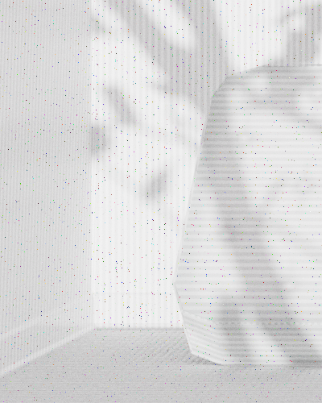
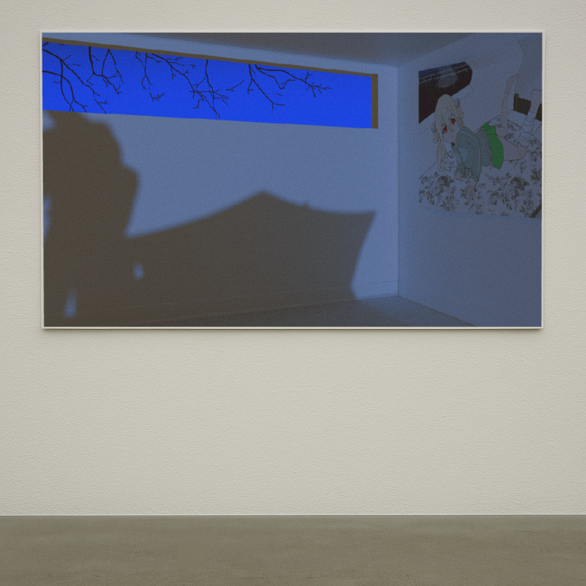
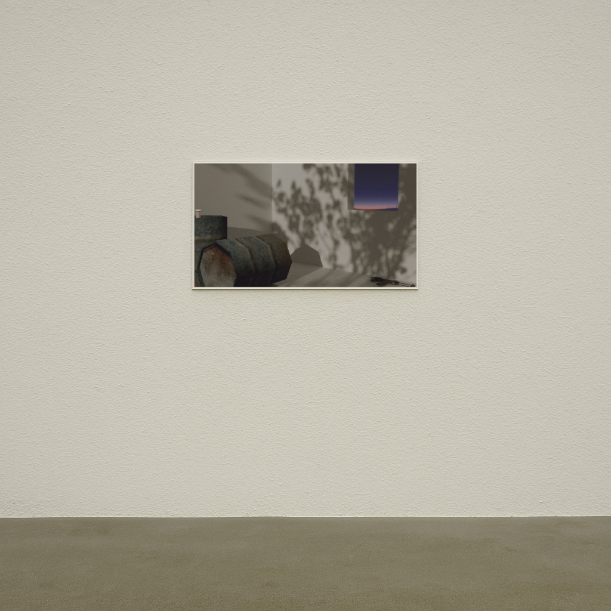
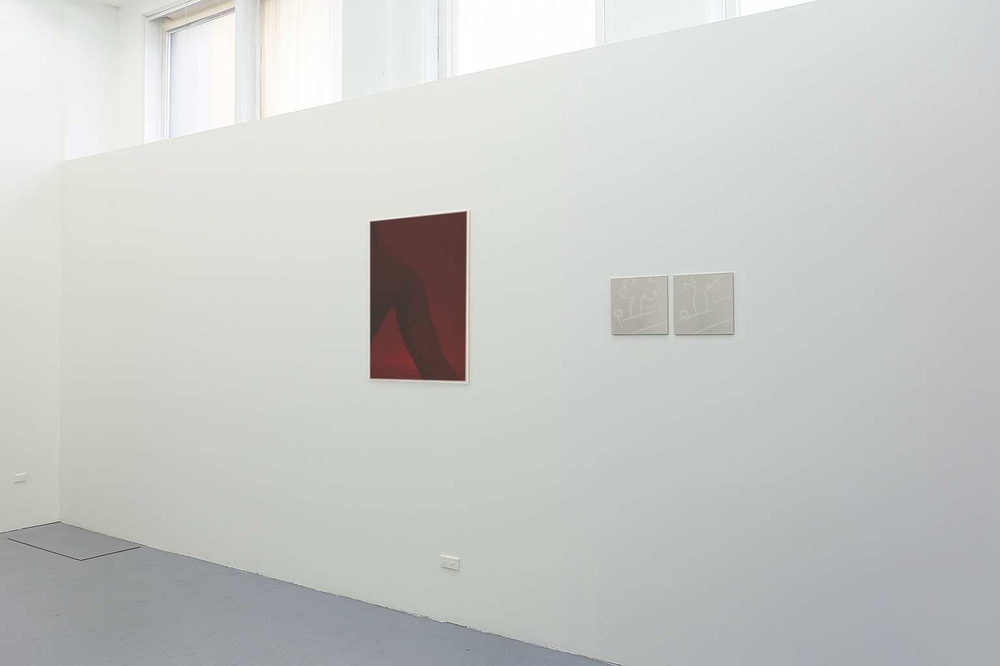
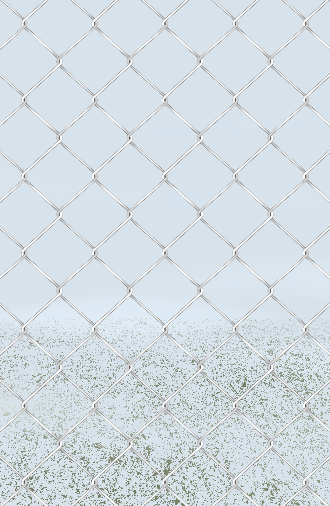
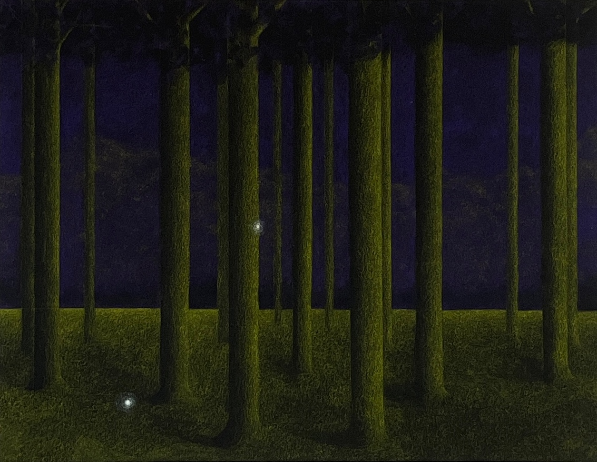
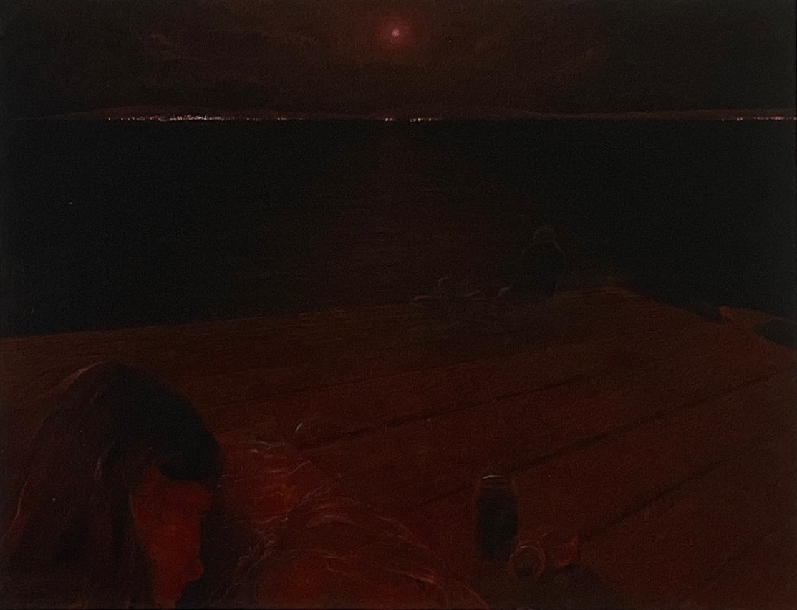

portfolio

untitled (close-up)
2025, GIF

untitled
2025, GIF

beautiful boy, how I love you so much
2025, digital print

untitled
2024, digital print

untitled and untitled
2024, digital print on drill cotton and diamond etching on aluminum

primrose
2024, digital print on acrylic

untitled
2021, coloured pencil on construction paper

the dock
2020, coloured pencil on construction paper
about
Maya Watt is an artist living in London. Specializing in physical and digital drawing, she reflects on the earliest moments of intimacy and loneliness experienced in her life as a young teenage girl. She draws inspiration from physical and digital relics, video games, and music. She's drawn to tools that are playful and disarming in nature, i.e. iPads and other creative software, coloured pencils, and construction paper.
cv
education
BA, McGill University, Montreal, QC (2022)
group shows
Meat Sacs, Corner7, London, UK (2024)
publications
The Veg, December 2020
contact
email: maya.caitlin.watt@gmail.com